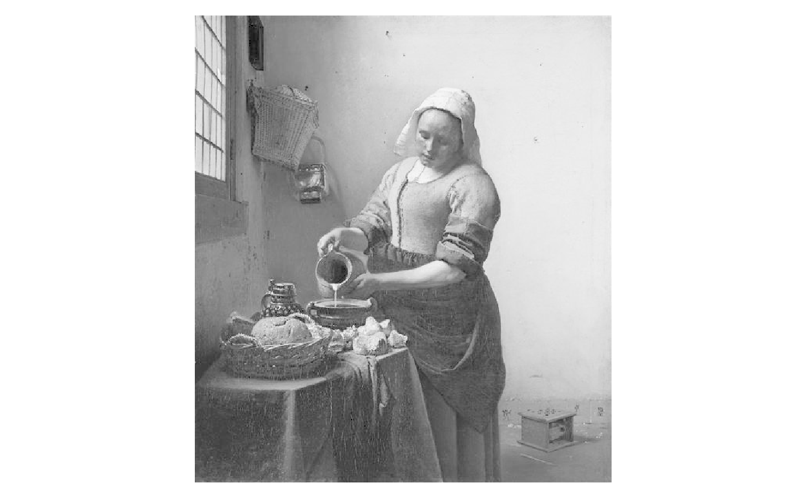
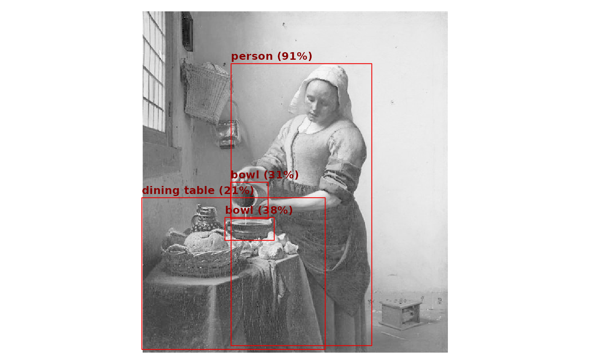

To demonstrate the package in a more realistic setting, we’ll show how to run an image detection network. First, we’ll download the YOLO26 (You Only Look Once) pretrained model from the Ultralytics repository.
model_url = "https://github.com/ultralytics/assets/releases/download/v8.4.0/yolo26n.onnx"
model_path = file.path(tempdir(), "yolo26n.onnx")
download.file(model_url, model_path, mode = "wb")Then we can load the package and load the model.
library(onnxr)
model = onnx_model(model_path)
print(model)
#> onnxr model
#> model: /tmp/RtmpOOb9iw/yolo26n.onnx
#> backend: cpu threads: 1
#> input: images [1, 3, 640, 640] <float>
#> output: output0 [1, 300, 6] <float>We can see that the model takes in a single 640x640 RGB image stored as a 4-dimensional array. The model documentation explains that the output is a set of 300 bounding boxes, each with 6 values: the coordinates of the box (x1, y1, x2, y2), the confidence score, and the class index. We can store the object types in a vector for later use.
types = c(
"person", "bicycle", "car", "motorcycle", "airplane", "bus", "train",
"truck", "boat", "traffic light", "fire hydrant", "stop sign",
"parking meter", "bench", "bird", "cat", "dog", "horse", "sheep", "cow",
"elephant", "bear", "zebra", "giraffe", "backpack", "umbrella", "handbag",
"tie", "suitcase", "frisbee", "skis", "snowboard", "sports ball", "kite",
"baseball bat", "baseball glove", "skateboard", "surfboard", "tennis racket",
"bottle", "wine glass", "cup", "fork", "knife", "spoon", "bowl", "banana",
"apple", "sandwich", "orange", "broccoli", "carrot", "hot dog", "pizza",
"donut", "cake", "chair", "couch", "potted plant", "bed", "dining table",
"toilet", "tv", "laptop", "mouse", "remote", "keyboard", "cell phone",
"microwave", "oven", "toaster", "sink", "refrigerator", "book", "clock",
"vase", "scissors", "teddy bear", "hair drier", "toothbrush"
)Now we are ready to load an image (Vermeer’s The Milkmaid) and run the model on it.
# load image from URL and center in 640x640 array
img_url = "https://uploads0.wikiart.org/images/johannes-vermeer/the-milkmaid.jpg!Large.jpg"
img = array(1, dim = model$input_shapes$images)
con = url(img_url, "rb")
raw = jpeg::readJPEG(readBin(con, "raw", n = 5e4))
close(con)
img[1, 1:3, 21:620, 53:587] = aperm(raw, c(3, 1, 2))
# helper to plot image
plot.image <- function(x) {
old_par = par(mar = c(0, 0, 0, 0))
x = aperm(x[1,,,], c(2, 3, 1))
plot(0:1, 0:1, type = "n", axes = FALSE, asp = nrow(x) / ncol(x))
rasterImage(x, 0, 0, 1, 1)
par(old_par)
}
plot.image(img)
To run the model, we simply call onnx_run() with the
session and the input image. The simplify = TRUE argument
tells the function to return the single output array directly, instead
of a named list. We see that the output contains bounding box
coordinates, confidence scores, and object type indices, as
expected.
res = onnx_run(model, img, simplify = TRUE)
dim(res)
#> [1] 1 300 6
head(res[1, ,])
#> [,1] [,2] [,3] [,4] [,5] [,6]
#> [1,] 206.97269 111.5892 453.8904 608.1549 0.9148500 0
#> [2,] 196.10501 382.3441 282.6647 422.7614 0.3758152 45
#> [3,] 206.14194 320.3298 271.9363 384.4835 0.3103585 45
#> [4,] 50.28871 347.6487 372.1358 614.8617 0.2087032 60
#> [5,] 51.58389 441.1353 372.0832 616.1539 0.1889582 60
#> [6,] 85.18721 403.0411 227.1776 487.6426 0.1187024 45Finally, we can pull out the bounding boxes with confidence scores above a certain threshold and plot them on top of the image.
plot.image(img)
idx_conf = which(res[1, , 5] >= 0.2) # minimum 20% confidence
for (j in idx_conf) {
# map bounding box to plot coordinates
x1 = res[1, j, 1] / 640
y1 = 1 - res[1, j, 2] / 640
x2 = res[1, j, 3] / 640
y2 = 1 - res[1, j, 4] / 640
# plot boxes and labels
bg = "#f0f0ff"
pad = 0.005
rect(x1, y1, x2, y2, border = bg, lwd = 1)
lbl = paste0(types[res[1, j, 6] + 1], " (", round(res[1, j, 5] * 100), "%)")
sw = strwidth(lbl, cex = 0.8, font = 2)
sh = strheight(lbl, cex = 0.8, font = 2)
rect(x1, y1, x1 + sw + 2*pad, y1 + sh + 2*pad, col = paste0(bg, "a0"), border = bg)
text(x1 + pad, y1 + pad, lbl, adj = c(0, -0.05), cex = 0.8, col = "#000", font = 2)
}